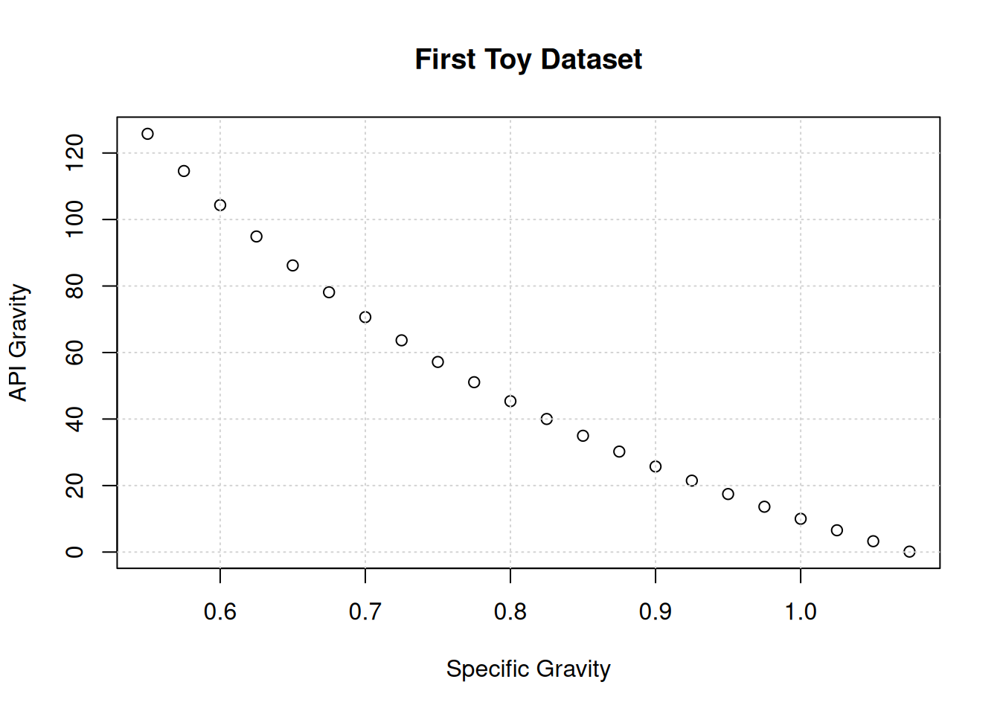
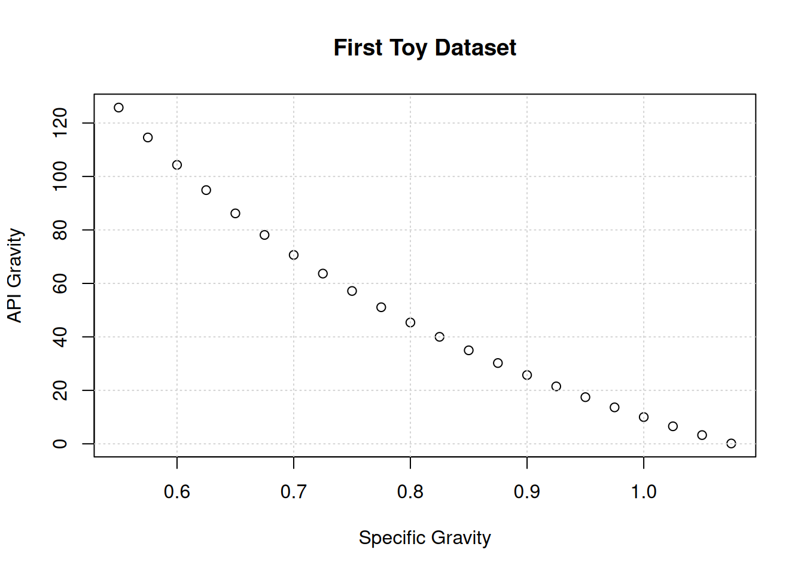
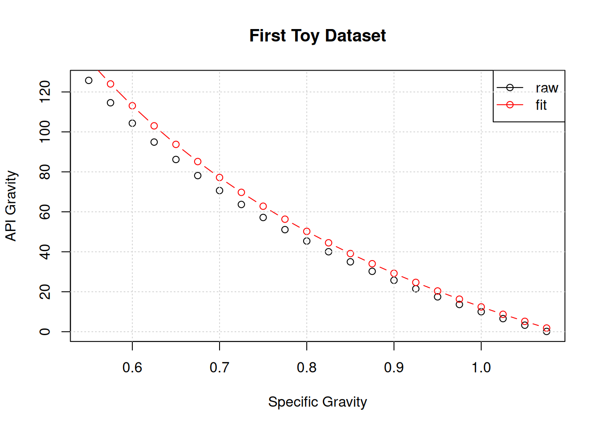

x <- seq(from=0.55, to=1.075, by=0.025)
y <- 141.5/x-131.5
plot(x,y,main="First Toy Dataset",xlab="Specific Gravity",ylab="API Gravity")
grid()
Weekly Report 2
Let’s start by rebuilding our toy data set:
\(\gamma_{api}=\frac{141.5}{\gamma_o}-131.5\)
x <- seq(from=0.55, to=1.075, by=0.025)
y <- 141.5/x-131.5
plot(x,y,main="First Toy Dataset",xlab="Specific Gravity",ylab="API Gravity")
grid()
Next, we will import a library that uses an evolutionary search algorithm to find an equation to match this data:
library("gramEvol")The advantage of this technology over the regression methods we looked at last time is that we do not have to decide on the size of the equation before we start.
We do, however, have to decide what kind of operations we will allow.
op = grule('+', '-', '*','/')
This line says that we will allow addition, subtraction, multiplication and division.
expr=grule(op(expr, expr), var,con)
This line says that each operator will handle two expressions at a time, and that expressions can consists of other expressions, variables and constants.
var = grule(x)
This line says that x is our only variable.
con = gvrule(w)
This line says that we will use a list of constants.
Here we define that list to include the two constants we need, plus some others we don’t need.
w<-seq(from=121.5,to=161.5, by=10)Next, we put it all together to build the grammar which the algorithm will use to build equations in polish notation.
# Define the rules
ruleDef <- list(expr = grule(op(expr, expr), var,con),
op = grule('+', '-', '*','/'),
var = grule(x),
con = gvrule(w))
# Create the Grammar
grammarDef <- CreateGrammar(ruleDef)
# Print Backus-Naur version
grammarDef<expr> ::= <op>(<expr>, <expr>) | <var> | <con>
<op> ::= "+" | "-" | "*" | "/"
<var> ::= x
<con> ::= 121.5 | 131.5 | 141.5 | 151.5 | 161.5Our target equation in polish notation looks like this:
-(/(141.5,x),131.5)
If you were lucky enough to use a 1980’s HP calculator, then you know that we can drop the parenthesis and commas and still have a valid expression:
-/141.5x131.5
and if you’re curious, this expression has a length of 5.
| 1 | 2 | 3 | 4 | 5 |
|---|---|---|---|---|
| \(-\) | \(/\) | \(141.5\) | \(x\) | \(131.5\) |
Next, the algorithm will generate hundreds of expressions randomly using the grammar we just defined. Here are the first 15 (converted to R for readability):
set.seed(13)
GrammarRandomExpression(grammarDef, 15)[[1]]
expression(131.5)
[[2]]
expression(141.5)
[[3]]
expression(x)
[[4]]
expression(121.5/(151.5 * 141.5))
[[5]]
expression(x * x)
[[6]]
expression(x)
[[7]]
expression(151.5)
[[8]]
expression(151.5 + 151.5)
[[9]]
expression(x)
[[10]]
expression(x)
[[11]]
expression(x - x)
[[12]]
expression(x)
[[13]]
expression(x - 131.5)
[[14]]
expression(x)
[[15]]
expression(151.5)There are a couple of things to notice here.
Next, we need a fitness function to measure how good these equations are. We will stay with the default:
(mean(log(1 + abs(y - result))
Here, result is the estimate of y produced by the randomly generated expressions. These expressions in polish notation are converted into R code to calculate result.
As some of the expressions generated will produce rubbish answers, we need to punish them by assigning a fitness of positive infinity:
if (any(is.nan(result))) return(Inf)
Our target expression will generate a fitness of zero, as result=y.
Here is our fitness function:
SymRegFitFunc <- function(expr) {
result <- eval(expr)
if (any(is.nan(result)))
return(Inf)
return (mean(log(1 + abs(y - result))))
}Next, we set the algorithm off to search for the optimum equation by mimicking natural selection in biology.
We are telling it that it can stop early if the value of the fitness function drops below 0.1:
terminationCost = 0.1
Otherwise, continue for 2500 generations:
iterations = 2500
and ensure that any equation considered has a length of 10 or less
max.depth = 10
set.seed(13)
ge <- GrammaticalEvolution(grammarDef,
SymRegFitFunc,
terminationCost = 0.1,
iterations = 2500,
max.depth = 10)Here are the results:
geGrammatical Evolution Search Results:
No. Generations: 1531
Best Expression: 141.5/x - 131.5
Best Cost: 0 The algorithm succeeded in finding our target equation in after 1531 generations.
plot(x,y,main="First Toy Dataset",xlab="Specific Gravity",ylab="API Gravity")
points(x,eval(ge$best$expressions), col = "purple", pch=1,type="b")
legend("topright",legend=c("raw","fit"),col=c("black","purple"),lwd=c(1,1),pch=c(1,1))
grid()Although not useful for this toy dataset, we can expand the types of equations in the search by adding operations that work on only one expression.
In this example we will add logarithms and exponentiation:
func = grule(log, exp)
and tell the algorithm that it takes only one expression:
func(expr)
ruleDefnew <- list(expr = grule(op(expr, expr), func(expr), var,con),
func = grule(log, exp),
op = grule('+', '-', '*','/'),
var = grule(x),
con = gvrule(w))
grammarDefnew <- CreateGrammar(ruleDefnew)
grammarDefnew<expr> ::= <op>(<expr>, <expr>) | <func>(<expr>) | <var> | <con>
<func> ::= `log` | `exp`
<op> ::= "+" | "-" | "*" | "/"
<var> ::= x
<con> ::= 121.5 | 131.5 | 141.5 | 151.5 | 161.5Here are a few examples:
set.seed(17)
GrammarRandomExpression(grammarDefnew, 15)[[1]]
expression(exp(x))
[[2]]
expression(x)
[[3]]
expression(x)
[[4]]
expression(x)
[[5]]
expression(exp(131.5 - exp(121.5 * (x/(131.5 * 131.5)) + x)))
[[6]]
expression(151.5)
[[7]]
expression(141.5 + x)
[[8]]
expression(131.5)
[[9]]
expression(x - (141.5 + log(121.5)))
[[10]]
expression(151.5)
[[11]]
expression(151.5)
[[12]]
expression(log(151.5 - x))
[[13]]
expression(exp(161.5) - x)
[[14]]
expression(x)
[[15]]
expression(exp(x))And now we’ll rerun the search:
set.seed(17)
geNew <- GrammaticalEvolution(grammarDefnew,
SymRegFitFunc,
terminationCost = 0.1,
iterations = 2500,
max.depth = 10,
disable.warnings = TRUE)And the new results:
geNewGrammatical Evolution Search Results:
No. Generations: 2500
Best Expression: (151.5 - exp(x))/x - log(131.5) - 131.5
Best Cost: 1.7219987169041 Three things to notice here:
The first two suggests that maybe if we ran the algorithm for more generations, we could discover our underlying equation.
The third brings up the concept of a “protected expression” that intercepts a NaN before it is calculated.
But first let’s see what the best expression looks like:
plot(x,y,main="First Toy Dataset",xlab="Specific Gravity",ylab="API Gravity")
points(x,eval(geNew$best$expressions), col = "red", pch=1,type="b")
legend("topright",legend=c("raw","fit"),col=c("black","red"),lwd=c(1,1),pch=c(1,1))
grid()
This expression is close in performance to our target expression, but significantly more complicated. This brings up a second idea… that we need to find a way to punish complexity.